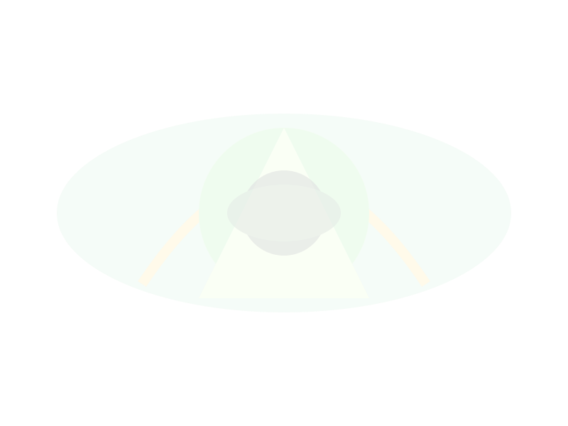
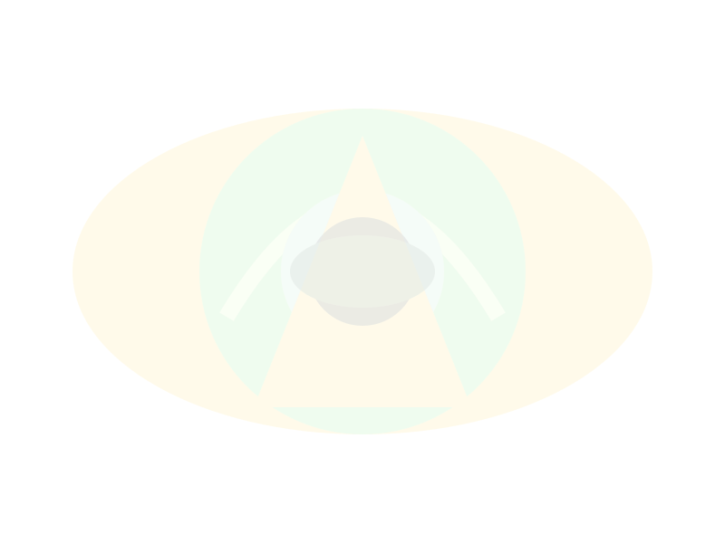
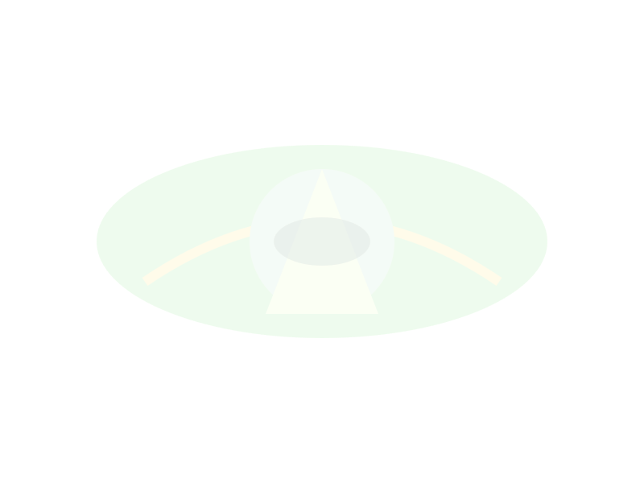

Quantum Healing for Black Women: A Scientific & Sacred Journey Through Chronic Anxiety and HPA Axis Dysregulation
A visual and scientific guide integrating epigenetics, neuroscience, and esoteric healing practices
Welcome Letter
Dear Beautiful Soul,
This guide was made with deep love and reverence for you—the Black woman carrying not just your pain, but the ancestral weight of generations. Here we explore a healing path that is as cosmic as it is cellular.
How cortisol dysregulation affects Black women: Chronic racial stress can lead to unique patterns of HPA axis dysfunction, impacting both mind and body. (Read more: APA - Anxiety Disorders)
Symptoms Checklist:
Persistent fatigue, sleep issues
Heightened anxiety or irritability
Brain fog, memory lapses
Digestive issues
Adrenal fatigue vs. trauma-induced dysregulation: While adrenal fatigue is debated, trauma-induced HPA axis dysregulation is well-documented in scientific literature.
Tip: Print this page and highlight your symptoms for your healing journal.

Epigenetics & Generational Trauma
“You are your ancestors' wildest recalibration.”
How trauma alters gene expression: Scientific research shows that trauma can be transmitted across generations, not just through direct experience, but also through cultural, societal, and familial channels. (Healing Collective Trauma by Thomas Hübl)
The American Psychological Association’s 2021 apology acknowledged psychology’s role in perpetuating systemic racism and human hierarchy, which has contributed to intergenerational wounds in Black communities.
Reflection: What family stories shaped your sense of safety? Where in your lineage do you feel unresolved pain?
Tip: Use this page as a journal prompt for exploring family and ancestral patterns.

Quantum Healing Explained
“You are a universe in ecstatic motion.” – Rumi
Quantum Entanglement: Everything is energetically connected. What we observe and intend can influence outcomes at the smallest levels.
Observer Effect: Our focused attention and intention can shift energetic patterns in the body and mind.
Vibrational Medicine: Healing modalities (sound, light, thought) can raise our vibration and promote cellular healing.
Thought Patterns: Repeated beliefs and intentions create energetic resonance, influencing physical and emotional states.
“Healing is both science and sacred art. Practices like visualization, meditation, and affirmation harness quantum principles for transformation.”
Tip: Try a short visualization—imagine your body as luminous energy, every cell vibrating with healing and love.
Neuroplasticity and the Black Female Brain
“Your brain is not a fixed structure—every thought, every act of self-love, rewires your reality.”
Neuroscience research shows that trauma, mindfulness, and identity all shape the brain’s neural pathways. Mindful practices and affirming self-talk can literally rewire your brain for resilience and joy. (Research Example)
I AM Scripts for Rewiring:
I am worthy of healing and joy.
I am safe in my body and mind.
I am the author of my story.
I am resilient, radiant, and whole.
Tip: Repeat these affirmations daily to support your brain’s healing and growth.
The Science of Sacred Visualization
“See your healed self speaking to your current self, offering wisdom and love.”
Theta Brainwave Meditation Techniques:
Find a quiet, comfortable space. Close your eyes and take slow, deep breaths.
Visualize a gentle wave of teal and burgundy light washing over you, calming your mind and body.
Allow your breath to slow, inviting your brain into a relaxed, theta state (4-8 Hz).
Picture your future, healed self—radiant, joyful, and free—approaching you with open arms.
Visualization Script:
“I see my healed self. She is radiant, calm, and joyful. She tells me: ‘You are safe. You are loved. You are becoming whole.’ I receive her wisdom and let it fill every cell of my being.”
Tip: Use this script in your daily meditation practice or print it for your altar or journal.
Guided Imagery & Rituals
“Ritual is the language of the soul—where intention meets the ancestors.”
Moon Ritual for Releasing Ancestral Pain
Light a circle of candles around your sacred space. Place a bowl of water, crystals, and a photo or token representing your lineage on an altar.
Under the moonlight (or visualized moon), speak aloud:
“I honor the pain and resilience of my ancestors. With this light, I release what no longer serves me or my lineage.”
Dip your fingers in the water, imagining it absorbing old wounds. Pour the water into the earth or a plant, symbolizing release and renewal.
Ancestral Veneration in Mental Health
Create a small altar with Black goddess statues, crystals, or meaningful objects.
Offer prayers, music, or written letters to your ancestors as part of your healing routine.
Invite ancestral guidance in meditation or journaling sessions.
Tip: Print this page and use it as a guide for your next new or full moon ritual.

Breathwork & Energy Alignment Practices
“Your breath is your bridge—between body, mind, and spirit.”
Breathwork Techniques
Box Breathing: Inhale for 4, hold for 4, exhale for 4, hold for 4. Repeat 4-8 cycles.
4-7-8 Breathing: Inhale for 4, hold for 7, exhale for 8. Repeat 4-8 cycles.
Lion’s Breath: Inhale deeply, then exhale forcefully with a “ha” sound, sticking out your tongue. Repeat 3-5 times.
Energy Healing: Chakra Alignment
Visualize a column of light (teal and burgundy) running from the base of your spine to the crown of your head.
As you breathe, imagine each chakra glowing bright and clear. Affirm: “I am aligned. I am open. I am whole.”